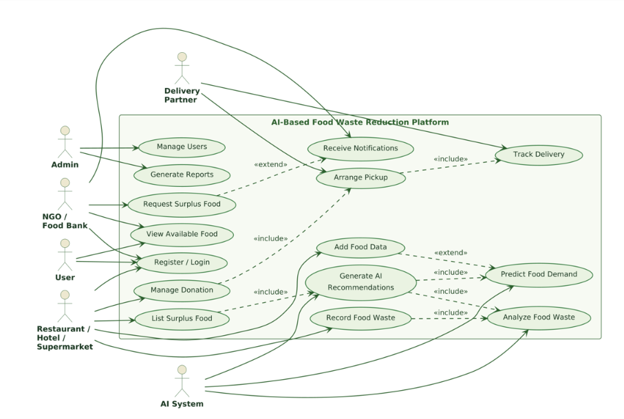
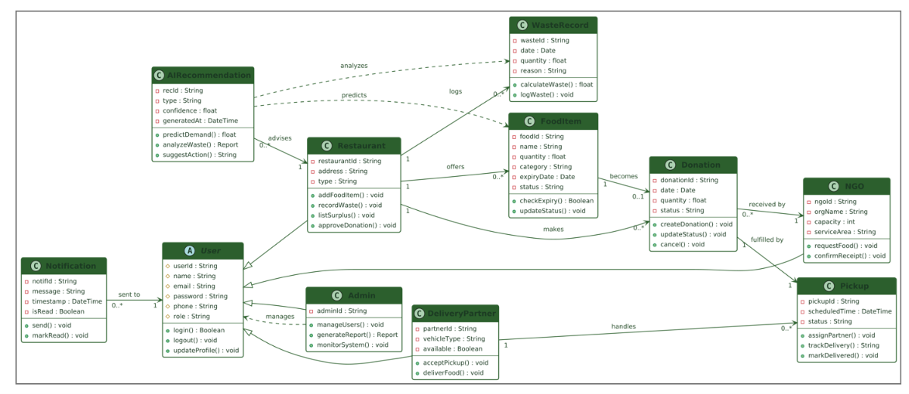
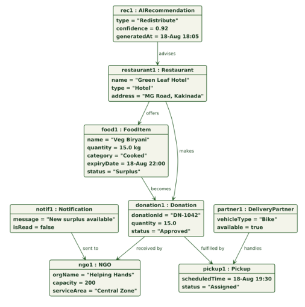
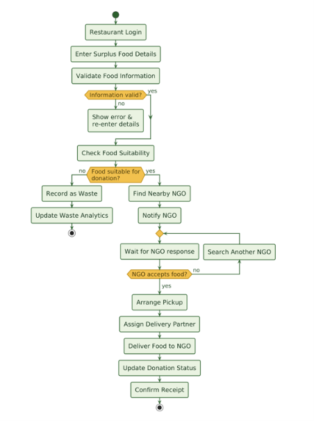
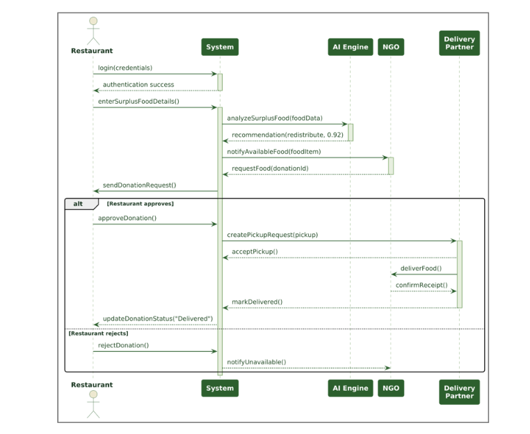
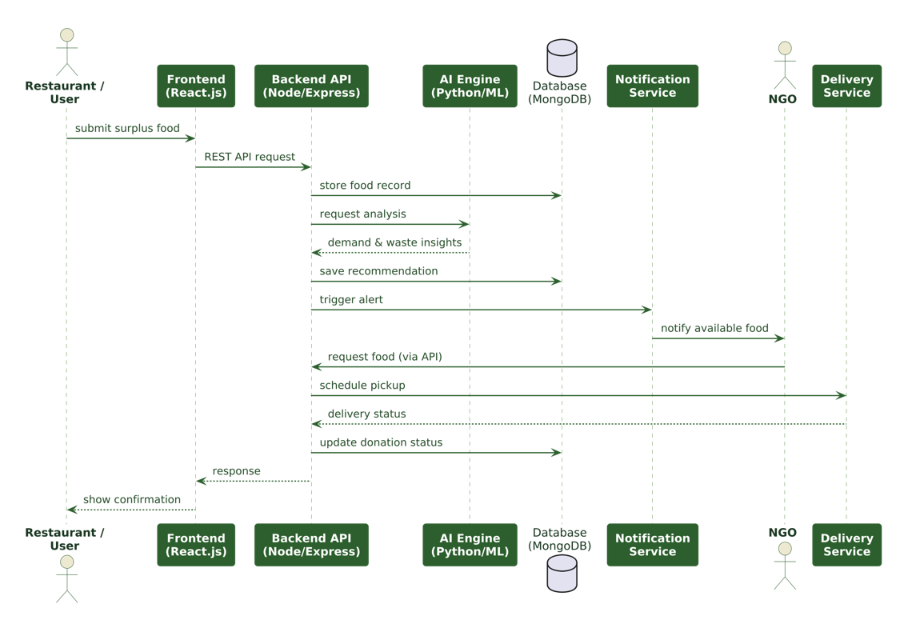

↗ 18.4%
Food diverted
1,284 kgvs. 1,084 kg last monthMONDAY, 14 OCTOBER 2024
Here’s what’s happening with your surplus today.
Every listing connects a provider to a nearby community partner before surplus becomes waste.
Food diverted
1,284 kgvs. 1,084 kg last monthMeals shared
3,842from 46 successful donationsPending pickups
083 due in the next 24 hoursActive partners
24NGOs and community kitchensFood diverted from landfill
Latest updates from your workspace
12 kg of prepared meals · Community Kitchen
12 minutes agoHope Foundation requested 35 meal boxes
48 minutes agoFresh produce · Today, 4:30 PM
2 hours agoLittle Steps Shelter is now connected
YesterdaySurplus food currently available for sharing
| Food item | Quantity | Best before | Status | Requests | |
|---|---|---|---|---|---|
🍱 Prepared meal boxesVegetarian · 450 kcal | 35 boxes | Today, 8:00 PM | Available | 2 requests | |
🥬 Fresh mixed produceVegetables · 18 kg | 18 kg | Tomorrow | Available | 1 request | |
🥖 Assorted bakery itemsBread & pastries · 9 kg | 9 kg | Tomorrow, 10:00 AM | Reserved | Accepted |
INVENTORY
Keep surplus visible so it can reach someone who needs it.
INBOX
Review requests from your partner network.
LOGISTICS
A clear handoff keeps good food moving.
TRACKING
Understand what is wasted so your team can prevent it.
Waste recorded this month
86 kgDown from last month
−14.8%Most common reason
OverproductionRecent food waste recorded by your team
| Date | Category | Quantity | Reason | Logged by |
|---|---|---|---|---|
| 14 Oct 2024 | Prepared meals | 8 kg | Overproduction | Arun Kumar |
| 12 Oct 2024 | Fresh produce | 5 kg | Spoilage | Meera Shah |
| 10 Oct 2024 | Bakery | 3 kg | Quality issue | Arun Kumar |
NETWORK
People and organisations helping surplus food reach its next table.
INSIGHTS
Turn your redistribution data into practical decisions.
Food diverted
1,284 kgEstimated meals shared
3,842Distribution of donated food this month
ABOUT
Food Waste Reduction Platform — the full report behind this workspace, from the presentation.
Why the platform exists
Food waste is a major real-world problem that occurs in restaurants, hotels, supermarkets, hostels, households, and other food-related organizations. Large quantities of edible food are often discarded because of excess preparation, poor storage, approaching expiry dates, or a lack of proper redistribution. The Food Waste Reduction Platform provides a centralized solution for managing and reducing food waste: providers record waste, list surplus food, and connect with nearby NGOs, food banks, and other organizations that can make use of the available food. The system also supports donation management, recipient requests, pickup and delivery coordination, notifications, and waste reporting — helping usable food reach people instead of being unnecessarily discarded.
Project summary
A software system designed to reduce food wastage by efficiently managing surplus food from restaurants, hotels, supermarkets, hostels, and households. The platform provides a centralized system where users can record food waste, list surplus food, find nearby NGOs or food banks, request available food, and coordinate pickup and delivery. It maintains food-waste records and provides reports to help organizations understand waste patterns and improve food management.
What the project solves
Food wastage is a significant problem. Large quantities of edible surplus food are discarded because there is no efficient way to identify, manage, and redistribute it. Donation activities are often handled through manual communication (phone calls, messages, personal contacts), making it difficult to quickly find suitable NGOs or food banks.
How it works
Key advantages: reduces food wastage, centralized donation management, easy NGO and recipient connectivity, faster redistribution, better coordination, real-time status tracking, proper records and reports, and sustainable food utilization.
Hardware & software
Hardware
Software
OOAD approach
What the report contains
Outcome of the project
The Food Waste Reduction Platform provides a centralized solution for managing surplus food and reducing unnecessary food wastage. It connects food providers with NGOs and other recipients while supporting donation management, notifications, pickup coordination, and record maintenance. The platform improves efficiency, transparency, and accessibility of food redistribution, supports people in need, promotes sustainable practices, and can be expanded to more organizations and advanced features with further development.
UML Design Diagrams as designed in the OOAD presentation
Actors and their interactions

Shows the actors and their interactions with the platform, such as listing food, requesting donations, managing users, and tracking delivery.
Classes, attributes & relationships

Shows the main classes, attributes, methods, and relationships in the system, such as User, Restaurant, FoodItem, Donation, NGO, and Pickup.
Real-time snapshot of objects

Shows a real-time snapshot of system objects and their relationships, such as a restaurant donating surplus food to an NGO.
Workflow of redistribution

Shows the step-by-step workflow of surplus food redistribution, from listing food to NGO acceptance and delivery.
Communication during a process

Shows the order of communication between actors and system components during a particular process, such as food donation.
Interaction between components

Shows the overall interaction between major system components, such as the user, frontend, backend, database, and notification service.
WORKSPACE
Manage your account, notifications and workspace connection.
Your profile in this workspace
Where your data lives
—mongodb://localhost:27017/foodloopusers · listings · requests · pickups · partners · waste · activity · metricsWhat you want to hear about
Food Waste Reduction Platform
Built as an OOAD project (UML) — a centralized platform that connects food providers with NGOs and food banks so surplus food is redistributed instead of wasted. Uses Node.js + Express + MongoDB with a live dashboard.
Sign out of this workspace on this device
NEW ENTRY
Share a few details and we’ll make it visible to your partners. A photo of the food is added automatically from its name.
HELP CENTER
Quick answers about your FoodLoop workspace.
Go to Food listings → Add food listing. Enter the food name (e.g. Chicken Biryani), quantity and best-before, and publish. A photo is fetched automatically.
From the NGO dashboard, browse available listings and press “Request this food”. You’ll see it under Requests in your workspace.
Everything lives in MongoDB at mongodb://localhost:27017 (foodloop database) — users, listings, requests, pickups, partners, waste and activity.
Use the “Log out” button at the bottom of the sidebar, or the ••• menu next to your profile.
FOOD AVAILABILITY
Browse available surplus food from providers in your area.